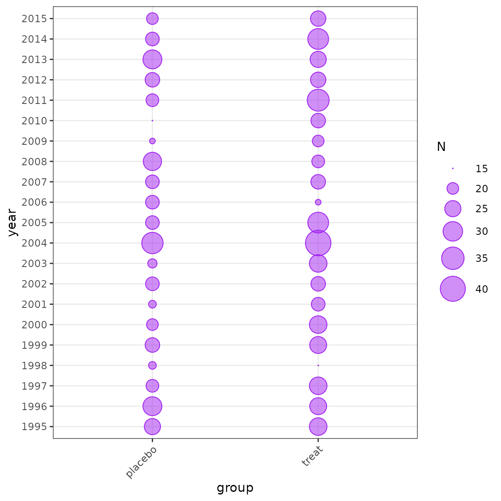

Introduction
Hurdle models are tricky, heres how to do it.
library(tidyverse)
library(reshape2)
library(brms)
library(influ2)
library(bayesplot)
options(mc.cores = parallel::detectCores())
# Simulate some data to use
set.seed(2020)
# create data according to the hurdle-lognormal distribution
pi <- 0.3 # probability of a zero
mu_log <- 2 # lognormal mean
sigma_log <- 0.2
# generate data
N <- 1000
set.seed(seed = 42)
ydf <- data.frame(year = 1995:2015, value = rnorm(n = 21, mean = 0, sd = 1))
idy <- sample(x = 1:21, size = N, replace = TRUE)
yr <- ydf[idy,]
levs <- sample(x = c("treat", "placebo"), size = N, replace = TRUE)
group <- data.frame(level = levs) %>%
mutate(value = ifelse(level == "treat", 0.9, 0))
y <- (1 - rbinom(n = N, size = 1, prob = pi)) *
rlnorm(n = N, meanlog = mu_log + group$value + yr$value, sdlog = sigma_log)
sim_data <- data.frame(y = y, group = group$level, year = factor(yr$year))
head(sim_data)
#> y group year
#> 1 6.791137 placebo 2002
#> 2 0.000000 placebo 1998
#> 3 11.200289 placebo 1998
#> 4 1.143665 treat 2012
#> 5 4.161341 treat 2007
#> 6 21.371726 treat 1999
plot_bubble(df = sim_data, group = c("year", "group"), fill = "green")

Distribution of data by year and group.
m1 <- brm(bf(y ~ year + group, hu ~ 1),
data = sim_data, family = "hurdle_lognormal", chains = 2,
file = "m1", file_refit = "never")
# plot_bayesian_cdi(fit = m1, xfocus = "group", yfocus = "year", xlab = "Group")
plot_index(m1, year = "year")
The new Bayesian CDI plot from the influ2 package.
plot_index(m1, year = "year")
# plot_influ(m1, year = "year")
plot_index(m1, year = "year")